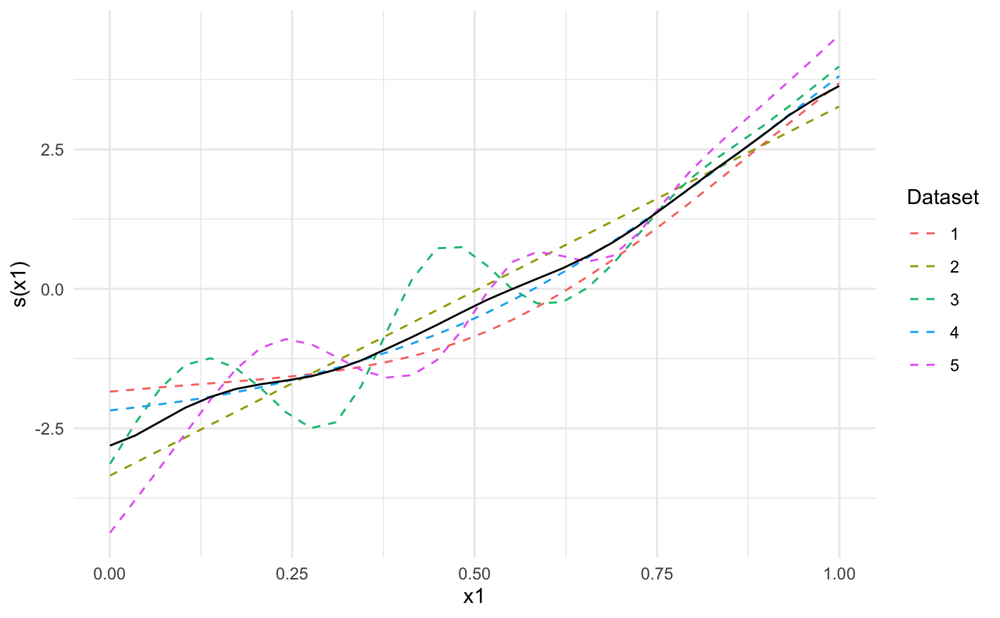

This function removes all individual participant data from a generalized additive model object, while keeping aggregated quantities. The resulting object can be shared without exposing individual participant data.
strip_rawdata(model, path = NULL, save_ranges = FALSE)
| model | A model fitted using |
|---|---|
| path | Optional path in which to save the object as a |
| save_ranges | Logical specifying whether to save the ranges of each variable used by the model. For numeric variables this amounts to the minimum and maximum, and for factors all levels are saved. |
Model object with individual participant data removed.
If model is of class "gamm", only the "gam" part of the
model will be kept.
Thin plate regression splines (bs='tp' and bs='ts') and Duchon splines bs='ds'
are currently not supported, since for these splines mgcv
requires the unique values of the explanatory variables for each smooth term for the predict
method to work. Future updates to this package will fix this.
library(metagam) library(mgcv) ## Create 5 datasets set.seed(1234) datasets <- lapply(1:5, function(x) gamSim(scale = 5, verbose = FALSE)) ## Fit a GAM in each dataset, then use strip_rawdata() to remove ## individual participant data models <- lapply(datasets, function(dat){ ## This uses the gam() function from mgcv model <- gam(y ~ s(x0, bs = "cr") + s(x1, bs = "cr") + s(x2, bs = "cr"), data = dat) ## This uses strip_rawdata() from metagam strip_rawdata(model) }) ## Next, we meta-analyze the models. ## It is often most convenient to analyze a single term at a time. We focus on s(x1). meta_analysis <- metagam(models, terms = "s(x1)") ## We can print some information summary(meta_analysis)#> Meta-analysis of GAMs from 5 cohorts, using method FE. #> #> Smooth terms analyzed: s(x1) #> #> Meta-analytic p-values of smooth terms: #> #> |Test |s(x1) | #> |:---------------------|:---------| #> |Stouffer's sum of z |2.682e-47 | #> |Edgington's sum of p |2.681e-44 | #> |Wilkinson's maximum p |1.717e-42 | #> |Wilkinson's minimum p |7.905e-13 | #> |logit p method |8.786e-24 | #> |Fisher's sum of logs |3.409e-45 | #> #>